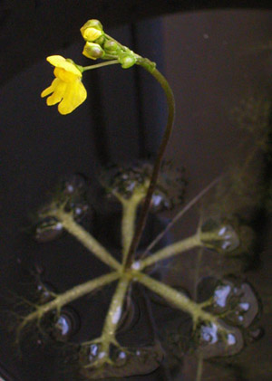

Previous || Next || Return to Mystery Plants || USC Herbarium
This Week's Mystery Plant | Dr. John B. Nelson Curator, USC Herbarium |
|
One of my students brought this one in the other day. It is a little surprising to see it blooming at the end of March, as it usually waits until mid-April or even early May to show its flowers. It is a carnivorous plant, meaning that it is able to capture and digest animal life as a means of augmenting whatever minerals (especially nitrogen and phosphorus) are available to it in the wild. The animals used by carnivorous plants are generally quite tiny; no need to worry about falling into a carnivorous plant around here or anywhere else. The carnivorous Venus' fly-trap, which does grow our coast, is capable of capturing animals as large as small frogs. (Plant carnivory has always fascinated humans…you might want to see "Little Shop of Horrors" sometime.) Our mystery plant belongs to a genus of about 100 species found throughout the world. This one is an aquatic, annual species which develops a prominent floating device. This flotation structure, as it develops, rises through the water of a quiet pond or ditch, ultimately bringing the flowering stem to the top. The underwater "floats" bear tiny traps on their edges. These traps are nearly microscopic, but highly effective in pulling in small aquatic critters that swim too close. A complicated mechanism, involving tiny trigger hairs and a trap door, is involved. Other, related species of our mystery plant don’t float, but instead live on saturated or dripping soil. You might see our mystery plant in any of the coastal counties. It is fairly common, and occurs from New Jersey south to Texas and Florida. Several brilliant yellow flowers occur near the top of the leafless stalk, and a pond full of this unusual species is a beautiful sight. |
 Photo by Linda Lee |